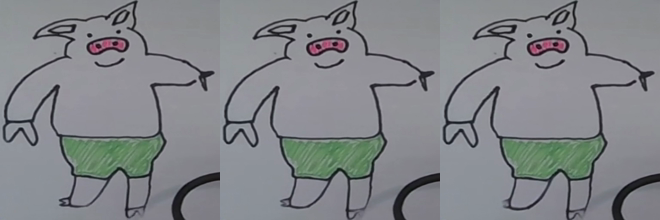

🖼 일러스트 트랙 — 그림이 내 표정을 따라 한다
FasterLivePortrait · 로컬 GPU 전용 · 아래는 미리 렌더한 결과입니다
이 저장소에는 얼굴을 움직이는 방법이 두 가지 있습니다. 대상에 따라 되는 쪽이 갈립니다 — 같은 모델인데 그림 종류에 따라 결과가 정반대라, 실측으로 확인한 뒤 트랙을 나눴습니다.
되는 것 표준 비율 일러스트 · 명화

안 되는 것 손그림 · 낙서 · 치비

그래서 손그림은 이 트랙이 아니라 ARAP 워프 미러링이 담당합니다. 원본 획을 삼각형 그물로 변형하는 방식이라 없는 픽셀을 만들지 않고, 브라우저에서 실시간으로 돕니다.
왜 웹에서 직접 못 돌리나
| 백엔드 | 프레임당 | 체감 |
|---|---|---|
| TensorRT (RTX 4070 Ti) | 27–37 ms | 실시간 (약 30fps) |
| ONNX GPU (같은 카드) | 118–124 ms | 약 8fps — 실시간 아님 |
실시간은 TensorRT 전용 숫자입니다. 그런데 TensorRT 엔진은 빌드한 GPU와 버전에 묶여 다른 장비에서 로드되지 않습니다. 무료 호스팅은 CPU라 더 느리고, 웹캠 프레임을 서버까지 왕복시키면 "따라 한다"는 체감도 무너집니다. 그래서 이 페이지는 미리 렌더한 결과만 보여줍니다.